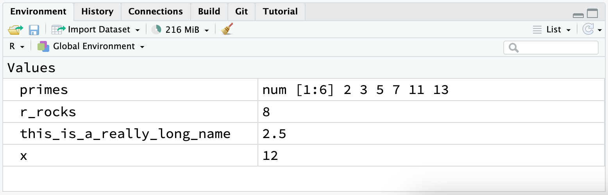

1 / 200 * 30
#> [1] 0.15
(59 + 73 + 2) / 3
#> [1] 44.66667
sin(pi / 2)
#> [1] 12 Flujo de trabajo: conceptos básicos
Ahora tiene algo de experiencia ejecutando código de R. No te dimos muchos detalles, pero obviamente has descubierto los conceptos básicos, ¡o habrías tirado este libro por la frustración! La frustración es natural cuando comienzas a programar en R porque es muy estricto con la puntuación, e incluso un carácter fuera de lugar puede hacer que se queje. Pero si bien debe esperar sentirse un poco frustrado, consuélese con el hecho de que esta experiencia es típica y temporal: le sucede a todos, y la única forma de superarlo es seguir intentándolo.
Antes de continuar, asegurémonos de que tiene una base sólida para ejecutar código de R y que conoce algunas de las características más útiles de RStudio.
2.1 Conceptos básicos para escribir código
Repasemos algunos conceptos básicos que hemos omitido hasta ahora con el fin de que pueda graficar lo más rápido posible. Puedes usar R para hacer cálculos matemáticos básicos:
Puede crear nuevos objetos con el operador de asignación <-:
x <- 3 * 4Tenga en cuenta que el valor de x no se imprime, solo se almacena. Si desea ver el valor, escriba x en la consola.
Puedes ccombinar múltiples elementos en un vector con c():
primos <- c(2, 3, 5, 7, 11, 13)Y la aritmética básica sobre vectores se aplica a cada elemento del vector:
primos * 2
#> [1] 4 6 10 14 22 26
primos - 1
#> [1] 1 2 4 6 10 12Todas las declaraciones de R en las que crean objetos, declaraciones de asignación, tienen la misma forma
nombre_del_objeto <- valorAl leer ese código, diga “el nombre del objeto obtiene valor” en su cabeza.
Hará muchas asignaciones, y <- es una molestia escribir. Puede ahorrar tiempo con el método abreviado de teclado de RStudio: Alt + - (el signo menos). Tenga en cuenta que RStudio rodea automáticamente <- con espacios, lo cual es una buena práctica de formateo de código. El código puede ser para leer en un buen día, así que tómese un respiro y use espacios.
2.2 Comentarios
R ignorará cualquier texto en esa línea después de #. Esto le permite escribir comentarios, texto que R ignora pero que otros humanos leen. A veces incluiremos comentarios en ejemplos que explican lo que sucede con el código.
Los comentarios pueden ser útiles para describir brevemente lo que hace el siguiente código.
# crea vector de números primos
primos <- c(2, 3, 5, 7, 11, 13)
# multiplica primos por 2
primos * 2
#> [1] 4 6 10 14 22 26Con fragmentos de código cortos como este, puede que no sea necesario dejar un comentario para cada línea de código. Pero a medida que el código que está escribiendo se vuelve más complejo, los comentarios pueden ahorrarle a usted (y a sus colaboradores) mucho tiempo para averiguar qué se hizo en el código.
Use comentarios para explicar el por qué de su código, no el cómo o el qué. Siempre es posible averiguar el qué y el cómo de su código leyéndolo detenidamente, incluso si puede ser tedioso. Si describe cada paso en los comentarios y luego cambia el código, deberá recordar actualizar los comentarios también o será confuso cuando regrese a su código en el futuro.
Averiguar por qué se hizo algo es mucho más difícil, si no imposible. Por ejemplo, geom_smooth() tiene un argumento llamado span, que controla la suavidad de la curva, con valores más grandes produciendo una curva más suave. Supongamos que decide cambiar el valor de span de su valor predeterminado de 0,75 a 0,3: es fácil para un futuro lector entender qué está pasando, pero a menos que anote su pensamiento en un comentario, nadie entenderá por qué cambiaste el valor predeterminado.
Para el código de análisis de datos, use comentarios para explicar su plan general de ataque y registre información importante a medida que la encuentre. No hay forma de volver a capturar este conocimiento desde el código mismo.
2.3 ¿Qué hay en un nombre?
Los nombres de los objetos deben comenzar con una letra y solo pueden contener letras, números, _ y .. Desea que los nombres de sus objetos sean descriptivos, por lo que deberá adoptar una convención para varias palabras. Recomendamos snake_case, donde se separan las palabras en minúsculas con _.
yo_uso_snake_case
otrasPersonasUsanCamelCase
algunas.personas.usan.puntos
Y_unasPocas.Personas_RENUNCIANaconvencionVolveremos a los nombres cuando analicemos el estilo del código en Capítulo 4.
Puede inspeccionar un objeto escribiendo su nombre:
x
#> [1] 12Haz otra asignación:
este_es_un_nombre_realmente_largo <- 2.5Para inspeccionar este objeto, pruebe la función de finalización de RStudio: escriba “este”, presione TAB, agregue caracteres hasta que tenga un prefijo único y luego presione Entrar.
Supongamos que cometió un error y que el valor de este_es_un_nombre_realmente_largo debería ser 3,5, no 2,5. Puede usar otro método abreviado de teclado para ayudarlo a solucionarlo. Por ejemplo, puede presionar ↑ para traer el último comando que escribió y editarlo. O escribe “este” y luego presiona Cmd/Ctrl + ↑ para enumerar todos los comandos que has escrito que comienzan con esas letras. Use las teclas de flecha para navegar, luego presione enter para volver a escribir el comando. Cambie 2.5 a 3.5 y vuelva a ejecutar.
Haz otra asignación más:
r_rocks <- 2^3Intentemos inspeccionarlo:
r_rock
#> Error: object 'r_rock' not found
R_rocks
#> Error: object 'R_rocks' not foundEsto ilustra el contrato implícito entre usted y R: R hará los tediosos cálculos por usted, pero a cambio, debe ser completamente preciso en sus instrucciones. De lo contrario, es probable que obtenga un error que dice que no se encontró el objeto que está buscando. Los errores tipográficos importan; R no puede leer tu mente y decir, “oh, probablemente querían decir r_rocks cuando escribieron r_rock”. El tamaño de las letras importa; de manera similar, R no puede leer tu mente y decir, “oh, probablemente querían decir r_rocks cuando escribieron R_rocks”.
2.4 Llamando funciones
R tiene una gran colección de funciones integradas que se llaman así:
nombre_funcion(argumento1 = val1, argumento2 = val2, ...)Intentemos usar seq(), que crea secuencias regulares de números, y mientras estamos en eso, aprenda más funciones útiles de RStudio. Escriba se y presione TAB. Una ventana emergente le muestra posibles terminaciones. Especifique seq() escribiendo más (una q) para eliminar la ambigüedad o usando las flechas ↑/↓ para seleccionar. Observe la información sobre herramientas flotante que aparece, recordándole los argumentos y el propósito de la función. Si desea más ayuda, presione F1 para obtener todos los detalles en la pestaña de ayuda en el panel inferior derecho.
Cuando haya seleccionado la función que desea, presione TAB nuevamente. RStudio agregará paréntesis de apertura (() y cierre ()) coincidentes para usted. Escriba el nombre del primer argumento, from, y establézcalo en 1. Luego, escribe el nombre del segundo argumento, to, y configúralo como 10. Finalmente, presione ejecutar.
seq(from = 1, to = 10)
#> [1] 1 2 3 4 5 6 7 8 9 10A menudo omitimos los nombres de los primeros argumentos en las llamadas a funciones, por lo que podemos reescribir esto de la siguiente manera:
seq(1, 10)
#> [1] 1 2 3 4 5 6 7 8 9 10Escriba el siguiente código y observe que RStudio proporciona una asistencia similar con las comillas emparejadas:
x <- "Hola mundo"Las comillas y los paréntesis deben ir siempre en pareja. RStudio hace todo lo posible para ayudarlo, pero aún es posible equivocarse y terminar con una falta de coincidencia. Si esto sucede, R le mostrará el carácter de continuación “+”:
> x <- "Hola
+El + te dice que R está esperando más entradas; no cree que hayas terminado todavía. Por lo general, esto significa que ha olvidado un " o un ). Agregue el par faltante o presione ESCAPE para abortar la expresión y vuelva a intentarlo.
Tenga en cuenta que la pestaña de entorno en el panel superior derecho muestra todos los objetos que ha creado:

2.5 Ejercicios
-
¿Por qué este código no funciona?
mi_variable <- 10 mi_varıable #> Error in eval(expr, envir, enclos): object 'mi_varıable' not found¡Mira cuidadosamente! (Esto puede parecer un ejercicio sin sentido, pero entrenar tu cerebro para notar incluso la más mínima diferencia valdrá la pena cuando programes.)
-
Modifique cada uno de los siguientes comandos de R para que se ejecuten correctamente:
libary(todyverse) ggplot(dTA = mpg) + geom_point(maping = aes(x = displ y = hwy)) + geom_smooth(method = "lm) Presione Option + Shift + K / Alt + Shift + K. ¿Qués lo que pasa? ¿Cómo puedes llegar al mismo lugar usando los menús?
-
Repasemos un ejercicio de Sección 1.6. Ejecute las siguientes líneas de código. ¿Cuál de los dos gráficos se guarda como
mpg-plot.png? ¿Por qué?mi_grafica_barras <- ggplot(mpg, aes(x = class)) + geom_bar() mi_diagrama_dispersion <- ggplot(mpg, aes(x = cty, y = hwy)) + geom_point() ggsave(filename = "mpg-plot.png", plot = mi_grafica_barras)
2.6 Resumen
Ahora que ha aprendido un poco más sobre cómo funciona el código de R y algunos consejos para ayudarlo a comprender su código cuando regrese a él en el futuro. En el próximo capítulo, continuaremos su recorrido por la ciencia de datos enseñándole sobre dplyr, el paquete de tidyverse que lo ayuda a transformar datos, ya sea seleccionando variables importantes, filtrando filas de interés o calculando estadísticas de resumen.